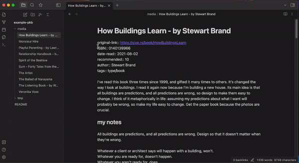
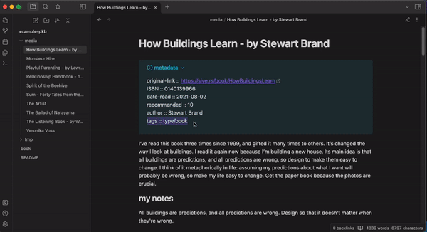

Examples
Example Vault
To try out the library, you can use this example vault containing book and movie reviews.
Setup
First, create a Notes object by pointing to one of your vault's directories:
from pathlib import Path
from pyomd import Notes, Note
path_dir = Path("/path/to/your/directory")
notes = Notes(path_dir)
## You can also create a single note object, if you only need to modify 1 note
# note = Note(path_dir)
move metadata between frontmatter and inline
notes.metadata.move(fr=MetadataType.FRONTMATTER, to=MetadataType.INLINE)
notes.update_content(inline_inplace=False, inline_position="top", inline_tml="standard") #type: ignore
notes.write()

regroup inline metadata inside a callout
notes.update_content(inline_inplace=False, inline_position="top", inline_tml="callout") #type: ignore
notes.write()

add and remove metadata
notes.filter(has_meta=[("tags", "type/book", MetadataType.INLINE)])
notes.metadata.add(k="type", l="[[book]]", meta_type=MetadataType.INLINE)
notes.metadata.remove(k="tags", l="type/book", meta_type=MetadataType.INLINE)
notes.update_content(inline_inplace=False, inline_position="top", inline_tml="callout") #type: ignore
notes.write()
